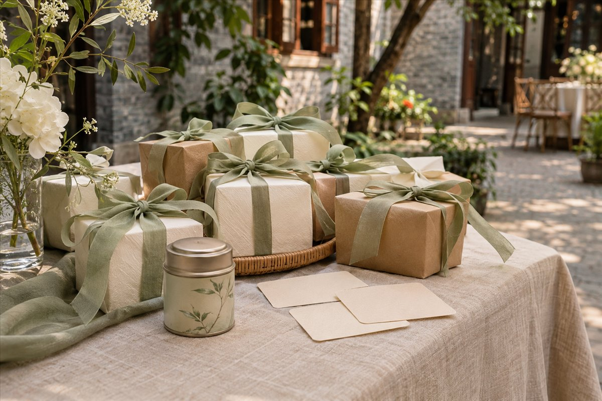

01 ／ 迎宾陈列 · 晚宴拆礼
礼物盲盒
每份礼物配一句线索。宾客挑一句喜欢的，把惊喜留到拆盒时。
查看玩法与礼物示例
- 迎宾时陈列包好的礼物，让宾客边逛边看。
- 晚宴后段用一两句话介绍玩法，各桌传阅线索卡，每人选一句。多人选中同一句时，从选这句的人里抽出一位。
- 获赠的宾客可以在桌边拆礼物，也可以互相看看大家抽到了什么。
到场先选卡 也可以让宾客签到时选一张写有礼物关键词的卡，晚宴时从参与的宾客中抽人，按卡片领取对应礼物并当场拆开。
礼物数量 人人有份时，准备价值相近的小物，选过的卡直接取走。礼物较少时，可把「选线索，再抽中选者」做成晚宴里的短环节。
| 包装上的话 | 礼物 |
|---|---|
| 把今天泡得久一点 | 一小罐茶 |
| 送给想赖床的下一个周末 | 一双柔软的袜子 |
| 留给某个下雨的下午 | 热巧克力冲饮 |
| 把今晚的一小束光带回家 | 一只小烛台 |
| 给那些值得记下来的小事 | 一本口袋笔记本 |